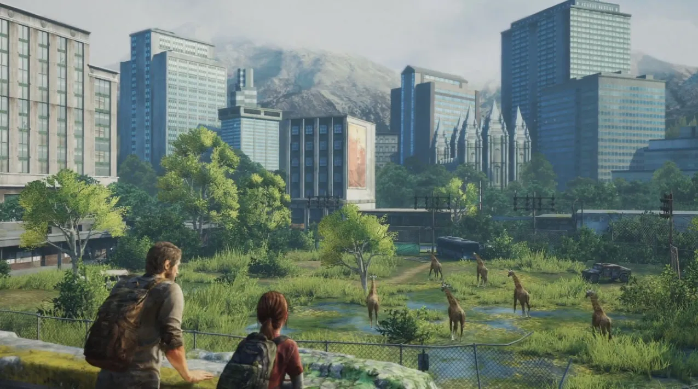
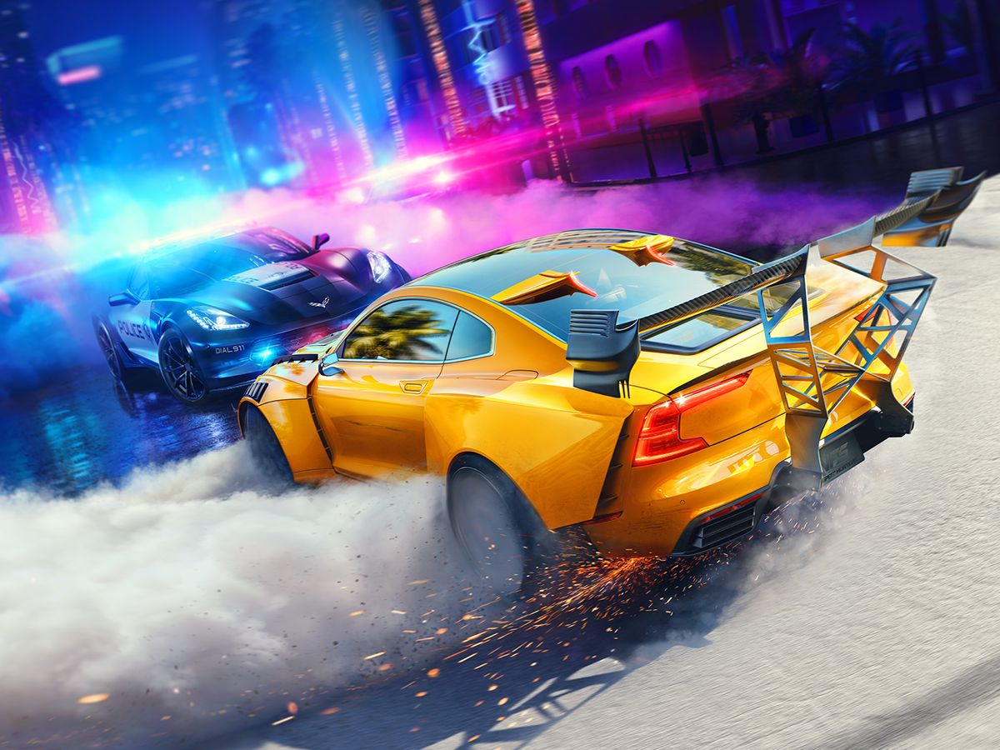
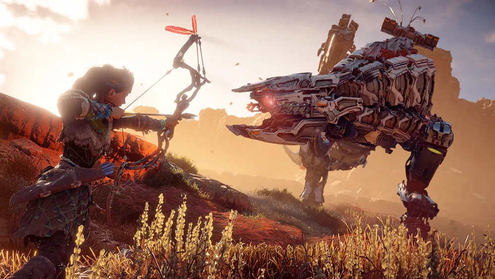

Games |
Description |
Graphics |
|---|---|---|
Last of US |
Winning multiple awards at the Game critic Awards,The Last of Us is a game based in a post apolytic world where survival is key. Everyone for themselves and there is a no hope of undoing the apocalypse. However suddden hope arises as someone mystery girl being immune to the disease of zombies appears. She and joel embark on a journey to the only research labotrary left in order to find a cure. |
 | Need for Speed |
Welcome to the world of automobiles, the world of racing, where adrenaline and the roar of engines define the essence of existence. Here, in the heart of this fast-paced universe, lies the essence of Need for Speed (NFS), a franchise that has become synonymous with the thrill of racing and the culture of cars. From its inception, NFS has been more than just a series of video games; it is a gateway to experiencing the raw power, the sheer beauty, and the unbridled excitement that comes with street racing. |
 |
Horizon Zero Dawn |
Horizon Zero Dawn is an action role-playing game set in a lush, post-apocalyptic world where nature has overtaken the ruins of an ancient civilization and robotic creatures roam the land. Players take on the role of Aloy, a skilled hunter and outcast, on a quest to uncover her past and the secrets behind the fallen world. The game features a vast open world, filled with diverse environments, dangerous mechanical beasts, and rich storytelling. Aloy's journey is marked by exploration, combat, and survival, as she uses both strategy and stealth to defeat robotic adversaries and uncover the fate of the ancient world. |
 |